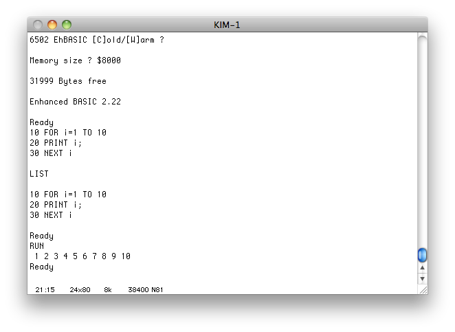

This is part of the Retrochallenge 2012 Winter Warmup which occurs from January 1, 2012 to January 31, 2012. Retrochallenge is "a loosely disorganised gathering of RetroComputing enthusiasts who collectively do stuff with old computers for a month."
You can read about my earlier efforts in restoring this KIM-1 on my RC2011 Summer Challenge project page.
Click on any picture to see a higher-resolution version.
I've submitted my entry in the retrochallenge.net "entrants" forum. My post says:
gcovilleYay
more KIM-1 noodlingIn the RC2011 Summer Challenge, I had great visions of fixing a KIM-1 and then playing around on it. Well, the beast was in pretty bad shape and I only barely got it functioning at the 11th hour.
I did more repairs on it during the off-season, so that needs to be documented.
There are still more repairs I could do, but I could just blow those off and head straight for play time.
I'm thinking I'm going to be less focused during this challenge than in the past. Look out for some sidetracks.
The upper connector with all the wires is the Expansion Connector. My KIM-1 used to be dependent on external circuitry, but now it can operate standalone. However, I do have some extra stuff hooked up at the moment, so the picture shows it connected.
I made a video showing what my KIM-1 is like now:
I still need to figure out what to do with it. I've got a few ideas.
The KIM-1 has a memory map that looks like this:
0000-0400 1k onboard static RAM 1700-173F I/O + Timer from RRIOT U3 1740-177F I/O + Timer from RRIOT U2 1780-17BF 64 bytes RAM in RRIOT U3 17C0-17FF 64 bytes RAM in RRIOT U2 1800-1BFF 1k ROM in RRIOT U3 1C00-1FFF 1k ROM in RRIOT U2However, the 6502 CPU is looking for three 2-byte vectors at FFFA, including the Reset vector. It turns out that the upper three address lines, A13-A15, are not used at all on the board, so the above map is duplicated 8 times at 0, 2000, 4000, ... , E000. The ROM at 1800-1FFF also appears at F800-FFFF. That's how the CPU resets and interrupts properly.
The main address decoding in the KIM-1 can be enabled or disabled by external circuitry. That signal is called DECEN and is the third wire that I'm using on the lower Application connector. If that line is grounded, the KIM-1's address decoding is normal, and everything's repeated 8 times. It's pretty much required to have some RAM at 0-FF for 6502 page 0 addressing and 100-1FF for 6502 stack. Therefore, a common configuration is to enable the DECEN signal only when the upper 3 address lines are either 000 or 111. The KIM-1's onboard peripherals then occupy 0-1FFF and E000-FFFF. This way you can have your RAM at 0 to cover pages 0-1 (and 2-3), and also have your ROM at FFFF for the vectors. This scheme leaves 2000-DFFF available to for other uses.
I've got a 32k static RAM part on my breadboard. Up until now, I've limited it to only 1k by grounding its 5 high order address lines. I'd now like to make the full 32k available for programs. Since it's RAM, I'd like it to be at the bottom half of the 64k address space. That's going to collide with the 0-1FFF location of the KIM-1's peripherals.
To get around this, I made it so the the DECEN line is only enabled for the E000-FFFF case. The RAM on the breadboard is located at 0-7FFF. The only problem here is that the KIM-1's firmware is targetted to run at 1800 and expects to see its I/O at 1740. Therefore, I modified the KIM-1's monitor to use the I/O at F740 and run in the F800-FFFF range instead. Being able to make these sorts of firmware changes is a nice benefit of having the KIM-1's monitor in EPROM instead of mask-programmed in the RRIOTs.
This is working just fine. One thing I'll have to be careful about is using example KIM-1 programs from "The First Book of KIM" (or elsewhere). Those programs make calls to subroutines in the KIM-1 monitor. I'll need to adjust those subroutine calls for my relocated ROM location.
Here's my current memory map:
0000-7FFF 32k static RAM on breadboard 8000-9FFF (empty) A000-BFFF 6532 RIOT on the breadboard C000-DFFF EPROM on the breadboard E000-E400 1k static RAM on the KIM-1 F700-F73F* I/O + Timer from RRIOT U3 F740-F77F I/O + Timer from RRIOT U2 F780-F7BF* 64 bytes RAM in RRIOT U3 F7C0-F7FF 64 bytes RAM in RRIOT U2 F800-FBFF* 1k ROM in RRIOT U3 FC00-FFFF 1k ROM in RRIOT U2 - 1/2 the 2716 on the daughterboardI've put "*" by some of the addresses because my board doesn't actually have a U3 RRIOT (or replacement board) installed. Yet.
The requirements of EhBASIC are relatively simple. The documentation states that it requires 10k for the interpreter and anywhere from 1k to 48k RAM to hold BASIC programs. EhBASIC communicates to the world entirely through six system routines: Input, Output, Load, Save, Irq, Nmi. Irq and Nmi are optional, and I can stub out Load and Save to being with. For Input and Output, I'll be using a serial port.
Up until now, I'd been connecting 2716 EPROMs to the KIM-1. They hold 2k bytes. In order to be able to hold 10k, I'd need to bump up to 16k. A 27128 holds 16k, but I've got some 27256 parts which hold 32k. I've wired in a 27256 into the circuit, but disabled the upper half. I've also added a serial port using a Motorola 6850 ACIA. (The circuit is quite similar to my ACIA circuit from last year, except I'm using a 10Mhz clock oscillator and dividing by 16 externally using a 74193 counter and another 16 inside the 6850. 10Mhz / 256 = 39062.25 bits/sec, which is close enough to 38400 baud to work.)
First sidetrack: My workspace had become quite a mess while I was developing the 6530 replacement board and I couldn't find my 6850 parts. I had purchased a couple pieces about a year ago and I knew they were on the desk somewhere. I had dozens of little tubes and anti-static foam pieces holding a variety of chips. The anti-static foam deteriorates after about 20 years, so I finally coalesced much of the collection to one larger anti-static pad:
For the big chips, you can see several 8048 series parts, a z80a, four 6530 RRIOTs, three 6840 timer parts, some 6820/6821s PIA parts, an AY-5-1013A UART, an 1802 cpu, an 8031 cpu, a 6532 RIOT, a 8073 SC/MP w/ BASIC, a 6502, a 6801 cpu, a Signetics 2650 CPU, four 8086 cpus, and a 8060D SC/MP cpu. I've also got quite a few EPROMs to play with, most of them are 2716 parts, but there are a few others, including the 27256s I'll be using to put EhBASIC into.
And here's a picture of the external circuit now:
To the left is the serial port. The EPROM there is a 27256 with half disabled.
Next step is to start working with the EhBASIC source code, get it to build w/ my assembler, and write up the minimal routines to make it go.
EhBASIC v2.22 source comes as a zip file containing readme.txt, basic.asm, and min_mon.asm. The readme.txt doesn't have anything useful in it. min_mon.asm is a very small 6502 monitor. It handles the reset/irq/nmi vectors, simulated serial IO, and invoking the BASIC cold-start or warm-start entry points. min_mon.asm includes basic.asm which contains the bulk of EhBASIC.
The code is written for the TASM assembler. My preferred assembler is asl. There are some syntax difference between the two assemblers. The first step was to convert the source files from TASM to asl syntax. Some pseudo-ops are different. The way to specify the high or low 8 bits of a 16-bit constant and the ability to use square brackets in arithmetic are also different.
TASM asl (in 6502 mode) ---------------------------------- .include include .byte fcb .word fdb *= org #<value #lo(value) #>value #hi(value) [] ()Since there were about 800 places to edit for these changes, I made a little sed script to do the conversion. The sed script isn't robust enough to fix every possible situation of the above syntax differences, but it does cover all the ones present in EhBASIC's asm files.
After that, the changes to basic.asm were minor. Just two places reflecting the different memory map of my environment.
The changes to min_mon.asm were not too bad. This is where I put the interface to my serial port. I also removed min_mon's owning of the 6502 reset/irq/nmi vectors. I'll be keeping the KIM-1 firmware in place and simply invoking this min_mon by hand.
I assembled it, burned it to a 27256 EPROM, and put it into the circuit. I then instructed the KIM-1 to execute at B000, and it worked first time!
Here's a screenshot of my zterm window:

EhBASIC has the ability to do a warm start and retain the program and data from
the previous run. If you're running in BASIC the whole time, control-c will
interrupt the program. But if the BASIC program calls out to an assembly
function which never returns and you have to reset the computer, a warm start
will get you back into EhBASIC without re-initializing the environment. This
assumes that EhBASIC's internal variables in page 0 and elsewhere haven't been
scribbled on. Right now, I think the KIM-1's ROM monitor may be conflicting
with EhBASIC, so I'm reluctant to rely on the warm-start. If this is the
case, it's a fairly straight-forward process to move the EhBASIC variables
to new places to not conflict with the KIM-1's page 0 usage.
And so here we are again, at the end of another retrochallenge. I got a nifty computing environment set up, but didn't have much time to play with it. I expect I'll be messing around with it all for several more months. There's lots of fun ahead making BASIC routines to interface with the various bits of KIM-1 I/O, ie. the keypad and LED displays. That should keep me busy.
Until next time!
Gilbert
{kind=link}
{kind=link}
{kind=link}